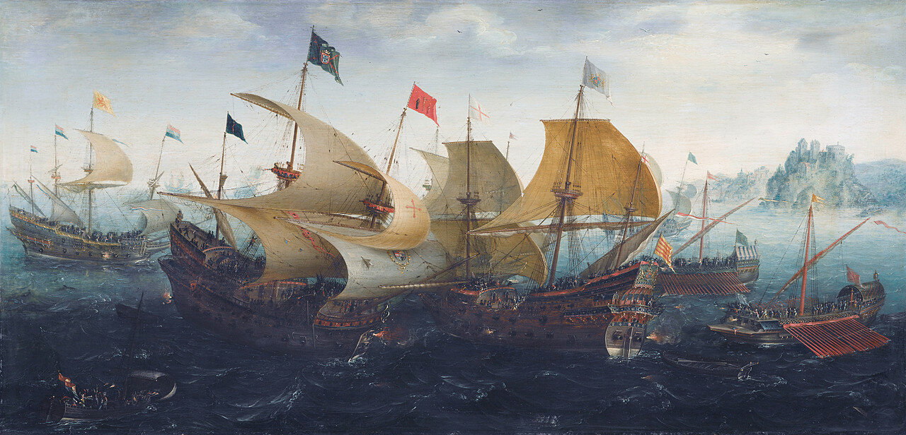
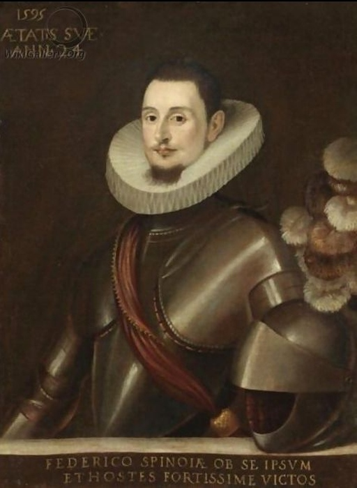
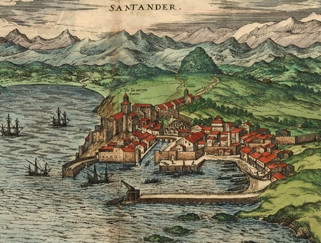
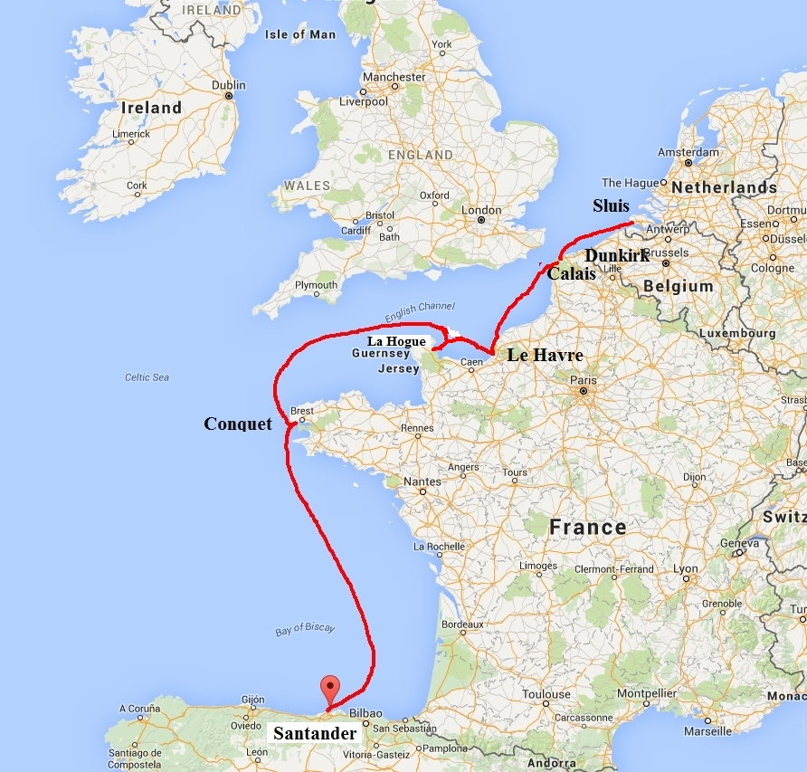

Федерико Спинола: Дон Кихот из Генуи
Я твердо уверен:
триумф ваш недолог;
закончился круг
ваших тусклых затей…
Н. Н. Асеев. Маяковский начинается
In these parts has happened that which hardly would have been believed, that six galleys known to be coming out of Spain and so long looked for should pass through the Narrow Seas and recover harbour without any hurt.'
Случилось то, во что трудно поверить. Шесть галер, о которых достоверно было известно, что они вышли из Испании и путь которых отслеживался на всем маршруте, прошли через проливы и достигли своей гавани без какого либо ущерба.
Так писал 13 сентября 1599 года сэр Роберт Сидни, в то время губернатор Флиссингена в Нидерландах, Роберту Сесилу, министру и государственному секретарю королевы Елизаветы. Одиннадцать лет спустя после гибели Непобедимой Армады 28-летний генуэзский капитан Федерико Спинола дважды провел испанские галеры через Ла-Манш и Па-де-Кале. Подвиги Спинолы были не просто авантюрой, предпринятой галерным капитаном за свой собственный счет; они вернули на море оружие, которое, казалось бы, европейские державы уже сдали в музей. За тринадцать лет войны с Англией галеры уступили галеонам, кораблям открытого моря, позиции основной силы испанского флота. Момент истины наступил19 апреля 1589 года, когда Фрэнсис Дрейк, имея четыре галеона, трижды отразил атаки десяти галер в Кадисе, потопив одну из них. Даже на Средиземном море, колыбели галерного флота, такой выдающийся мастер галерной тактики как Джованни Андреа Дориа, участник битвы при Лепанто, соперник Спинолы на внутриполитической арене Генуи, потерпел обидные неудачи по крайней мере в трех предпринятых им операциях (1586, 1590 и 1596 гг.) по срыву торговых коммуникаций английского торгового флота на пути в Турцию. Не помогли даже казни капитанов галер за их нежелание вступать в бой с англичанами. Непобедимая Армада, в состав которой планировалось включить 40 галер, получила только 4 португальских гребных корабля, которые даже не смогли пересечь Бискайский залив. Провалом закончилась и попытка использовать галеры во время англо-голландской операции по захвату Кадиса в 1596 году: 20 галер не смогли спасти город и в качестве трофея захватили всего лишь один флибот.

Аарт ван Антум (1608). Сражение при Кадисе. Rijksmuseum, Амстердам.
Практически без дела оказались и те 38 галер, которые еще в 1577 году были направлены для защиты карибских колоний Испании – рейды противника на эти владения испанской короны практически не встречали противодействия.
Единственным ярким исключением из этой череды неудач галерного флота стали действия Федерико Спинолы. Молодой генуэзский аристократ был ровесником битвы при Лепанто (1571). Представитель одной из четырех правящих семей Генуи, Федерико вместе со своим старшим братом Амбросио, как и остальные знатные генуэзцы, присягнул на верность испанской короне. Благосостояние семейства Спинолы позволило Федерико заняться осуществлением амбиционного плана по восстановлению утраченной репутации галерного флота, не особенно заморачиваясь о финансировании своего предприятия.

Портрет Федерико Спинолы (1595) Школа Федерико Бароччи.
Поступив в первый испанский университет в Саламанке на факультет права, Спинола недолго задержался там и уже в середине 80-х вернулся в Геную, исполненный желания посвятить свою жизнь службе на галерах Республики. В 1590 году Спинола отправился в Нидерланды, чтобы встать под знамена испанского наместнка Алессандро Фарнезе, герцога Пармы. Участие в снятии осады с Руана стоило ему тяжелого ранения в голову, глубокий шрам от которого сохранился до конца жизни. Но мечта о самостоятельных действиях на море не отпускала юного солдата удачи и в марте 1593 года Спинола представил проект воссоздания галерного флота на суд секретаря Военного совета Испании Эстебана де Ибарра. Он обосновывал этот проект невозможностью противостоять обширному флоту Англии, включающему большое количество крупных парусных кораблей, в условиях малой вместимости дружественных портов вокруг Англии. Эскадры же галер не требуют много места для базирования, позволяя вместе с тем эффективно перехватывать голландские и английские торговые и рыболовные суда, осуществлять перевозки испанских войск и предметов снабжения в регионе. Спинола дважды посещал Испанию – в 1595 и 1597 гг. – для защиты своего проекта, однако так и не добился успеха до смерти осторожного Филиппа II. И только когда в 1598 году на трон взошел молодой и неискушенный Филипп III, дело сдвинулось с мертвой точки. Спинола дал молодому королю беспроцентный заем в 100 000 дукатов (25 000 английских фунтов по тогдашнему курсу) на 1 год в обмен на согласие «создать в Англии базу, которую будут охранять галеры» из новой эскадры, сформированной и укомплектованной личным составом во Фландрии. Помещения для размещения солдат, 20 пушек и 2000 квинталей (90,5 тонн) пороха должен был обеспечить генерал-губернатор Нидерландов, средства на текущие расходы в размере 81 000 дукатов каждые 6 месяцев должны были поступать из королевской казны, а покрывать неминуемый дефицит платежей обязан был Спинола из своего кармана.
В марте 1599 года Спинола приказал начать строительство глубоководного бассейна в пункте базирования испанских приватиров Дюнкерке. Этот шаг должен был исключить негативное воздействие приливов и отливов на галеры: мелководье обнажалось при отливах, оставляя корабли на илистом грунте, отчего они быстро гнили. В это же время из Италии на деньги Спинолы были доставлены 200 корабельных мастеров для строительства двух галер и двух вспомогательных судов новой эскадры. Началось рекрутирование 4000 валлонских солдат и 1000 кавалеристов из Фландрии. Для оперативного обеспечения будущих действий флота Спинола организовал разведку противника. Состояние английских портов от Плимута до Ярмута разведывала группа агентов во главе с Ортензио Спинолой (Hortensio Spinola). Ортензио был схвачен при замере глубин в гавани Ипсвича, выдал себя за отца Федерико Спинолы и был помещен в Вестминстерскую тюрьму, где содержался пока шли переговоры об его обмене на высокопоставленных английских пленников.
Между тем Федерико Спинола вернулся в Испанию, где встретился с королем Филиппом III. От него он получил разрешение взять с собой во Фландрию галеры, построенные на верфи в Сантандере.

Сантандер, 1590 год. Работа Йориса Хофнагеля (1542 – 1601)
После погрузки на борт шести галер одной тысячи итальянских пехотинцев и денежного довольствия для расквартированной во Фландрии испанской армии, а также денег для оплаты услуг английских лоцманов, перешедших на сторону Испании, эскадра 28 августа 1599 года двинулась в путь. Потребовалось два дня и две ночи, чтобы пересечь Бискай и достичь порта Ле-Конке неподалеку от Бреста.

Маршрут галер Федерико Спинолы в 1599 году.
Здесь отряду пришлось задержаться на четыре дня, пополняя запасы воды. Разведка донесла о том, что более 60 английских и голландских кораблей курсируют в проливе Па-де-Кале, ожидая испанцев. Опасаясь худшего, наименее стойкие бойцы пустились в бега. Спинола не стал заниматься дезертирами, а лично вышел в ночной дозор. Заметив, что пинас Advice, прибывший из Плимута для наблюдения за испанскими галерами, ушел к берегу для отдыха, Спинола по тревоге ночью вывел свои галеры из Ле-Конке. Попутный южный ветер помог ему оторваться от английских крейсеров. Но этот же ветер, усилившись, создавал проблемы для его узких, мелкосидящих кораблей. Спинола со своими галерами укрылся за мысом Ла-Хог, где простоял двое суток, не замеченный преследователями. Высадив на берег всех женщин (жен офицеров, которые сопровождали своих мужей на этом переходе), Спинола совершил стремительный переход в Гавр. Англо-голландский флот в Плимуте не смог отследить этого перехода, поэтому отряд для перехвата галер Спинолы был направлен к мысу Ла-Хог, а не в Гавр. Спинола принял решение прорываться открыто по центру Ла-Манша, не прижимаясь к берегу, а полностью используя силу благоприятного ветра. Английская разведка обнаружила отряд Спинолы только когда он проходил мимо Кале. В то время там находилась эскадра нидерландского адмирала Юстина Нассауского, героя битвы с Непобедимой Армадой. Обрубив якорные канаты, чтобы не тратить время на выборку якорей, адмирал вывел 12 своих кораблей в море, но никто уже не мог догнать новехонькие двухмачтовые испанские галеры, развивавшие скорость до 12 узлов при попутном ветре и спокойном море. Оставались английские корабли, обеспечивавшие блокаду дюнкеркских приватиров в Дюнкерке, но Спинола предусмотрительно повел свои галеры мористее и к ночи 8 сентября вошел на рейд удерживаемого испанцами порта Слёйс. Маневрирование в узкой незнакомой гавани в ночное время не прошло без происшествий: три галеры сели на мель, но уже утром следующего дня все они были благополучно выведены на глубокую воду.
Блестящий переход галер под командованием Спинолы наделал много шума в Англии и Нидерландах: на адмиралов, не сумевших решить простую задачу, спустили всех собак. Спинола же не стал отсиживаться в безопасной гавани, почивая на лаврах, а уже на следующий день вывел в море две своих галеры и захватил нидерландский корабль, начав крейсерскую войну, которая, как он надеялся, позволит испанцам перехватить господство на море.
Дальнейшее развитие этих событий обсудим в следующий раз.